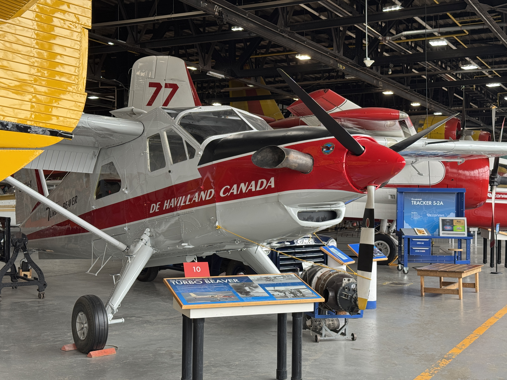

De Havilland Aircraft of Canada
In-Service Engineering - Structures Intern
16-month internship working on aircraft structural engineering for the Dash 8 series 100/200/300 & 400. This experience involved designing and substantiating repairs for damaged aircraft structures and preparing detailed engineering deliverables including repair drawings, ferry flight recommendations, and investigation reports. I applied engineering knowledge and stress analysis techniques to address operator damage reports and technical queries, while collaborating with internal teams, external suppliers, and airline customers to deliver timely, practical, and safety-focused solutions that maintained the serviceability and reliability of the fleet.
- Aircraft structural repair
- CATIA V5
- Engineering drawings and technical documentation
- Microsoft Office
